Blog
Hizmet alanlarına göre inşaat ve tadilat rehberi
Yedi hizmet alanımızı seçerek o konudaki pratik rehber yazılarına ve sık sorulan sorulara ulaşın.
Rehber Alanları
İlgilendiğiniz hizmeti seçin
ÖNE ÇIKAN REHBERLER
Son rehber yazıları
İnşaat ve yenileme sürecindeki temel kararlar için güncel içerikler.
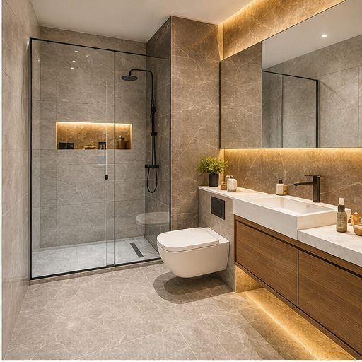
Tadilat
Anahtar teslim tadilatta nelere dikkat edilmeli?
Keşif, bütçe, malzeme seçimi ve iş programı netleştiğinde tadilat süreci daha kontrollü ilerler.
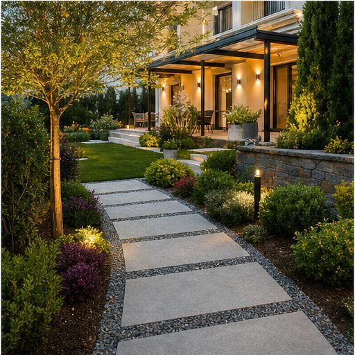
Peyzaj
Bahçe ve havuz uygulamalarında doğru planlama
Drenaj, zemin, bitki seçimi ve bakım ihtiyacı birlikte değerlendirilmelidir.
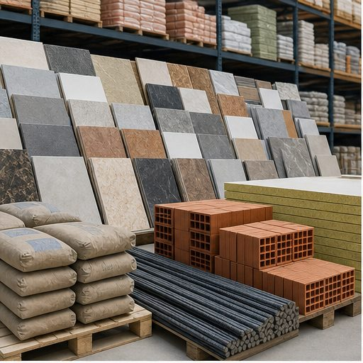
Malzeme
İnşaat malzemesi seçerken kalite neden önemli?
Doğru ürün seçimi, uygulama ömrünü ve bakım maliyetlerini doğrudan etkiler.
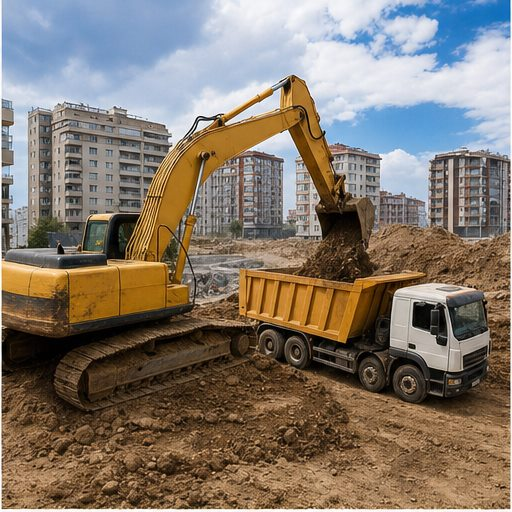
Hafriyat
Hafriyat öncesi saha hazırlığı nasıl yapılır?
Alan ölçümü, zemin durumu, makine erişimi ve atık planı iş başlamadan netleştirilmelidir.
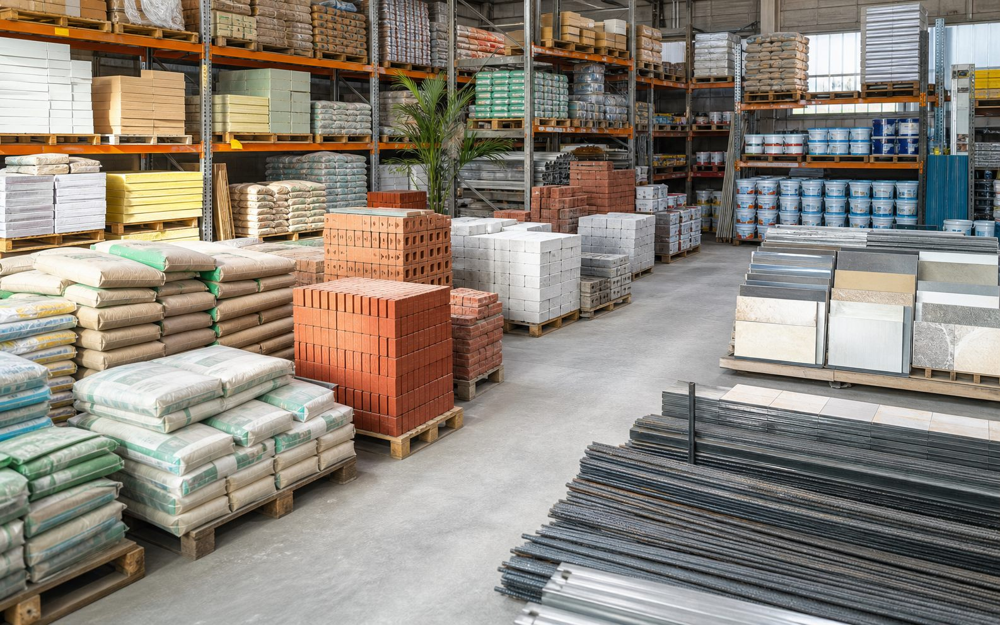
Maltepe
Maltepe yapı malzemeleri fiyat teklifi nasıl alınır?
Ürün listesi, miktar ve teslim ihtiyacı netleştiğinde yapı malzemesi teklifi daha hızlı hazırlanır.
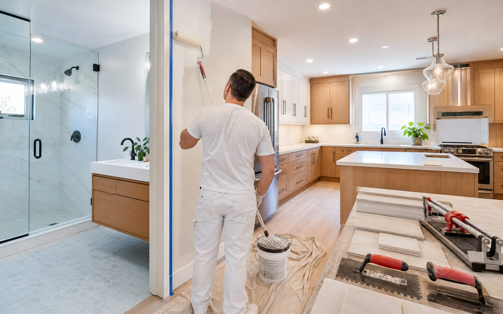
İstanbul
İstanbul'da tadilat firması seçerken nelere bakılmalı?
Keşif, yazılı teklif, malzeme seçimi ve teslim planı güvenilir tadilat sürecinin temelidir.
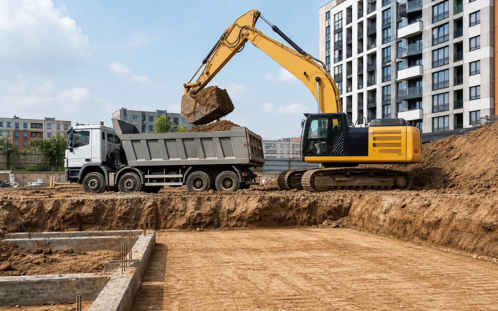
Hafriyat
Anadolu Yakası hafriyat ve moloz taşıma rehberi
Saha fotoğrafı, kazı derinliği ve makine erişimi hafriyat teklifini doğrudan etkiler.
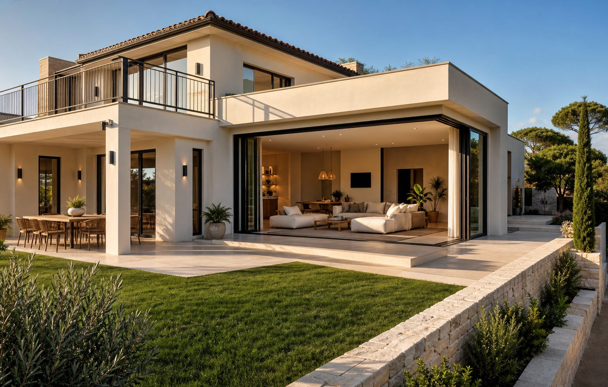
Villa
İstanbul villa tadilatında maliyeti etkileyen faktörler
İç mekan, dış cephe, bahçe, teras ve ıslak hacimlerin kapsamı fiyatı belirler.
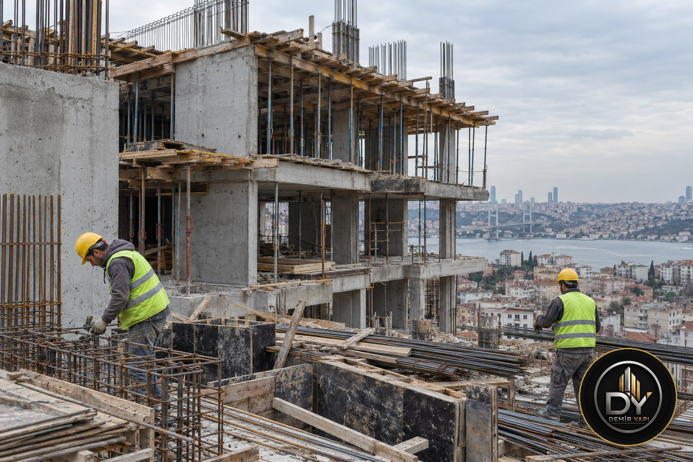
İNŞAAT
Şantiye hazırlığında ilk olarak neler planlanmalı?
Saha erişimi, güvenlik, depolama ve ekip akışı işe başlamadan önce birlikte planlanmalıdır.

İŞ PROGRAMI
İnşaat iş programı nasıl hazırlanır?
İş kalemleri, birbirine bağlı aşamalar ve teslim süreleri uygulanabilir bir takvimde buluşmalıdır.
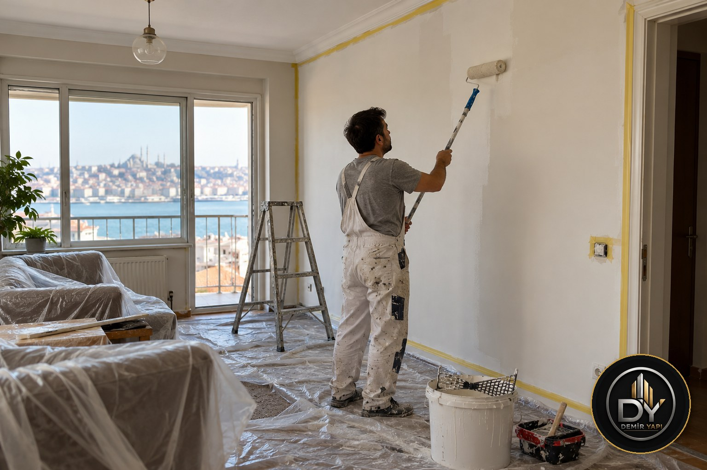
BOYA VE ZEMİN
Boya ve zemin yenilemesi hangi sırayla yapılır?
Yüzey kontrolü, tozlu işler, zemin uygulaması ve boya rötuşları birbiriyle uyumlu planlanmalıdır.
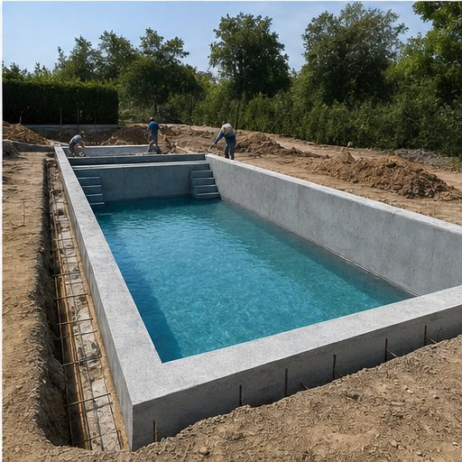
HAVUZ
Havuz yapımından önce hangi konular planlanmalı?
Yer seçimi, zemin, teknik alan, drenaj ve havuz çevresinin kullanımı birlikte değerlendirilmelidir.
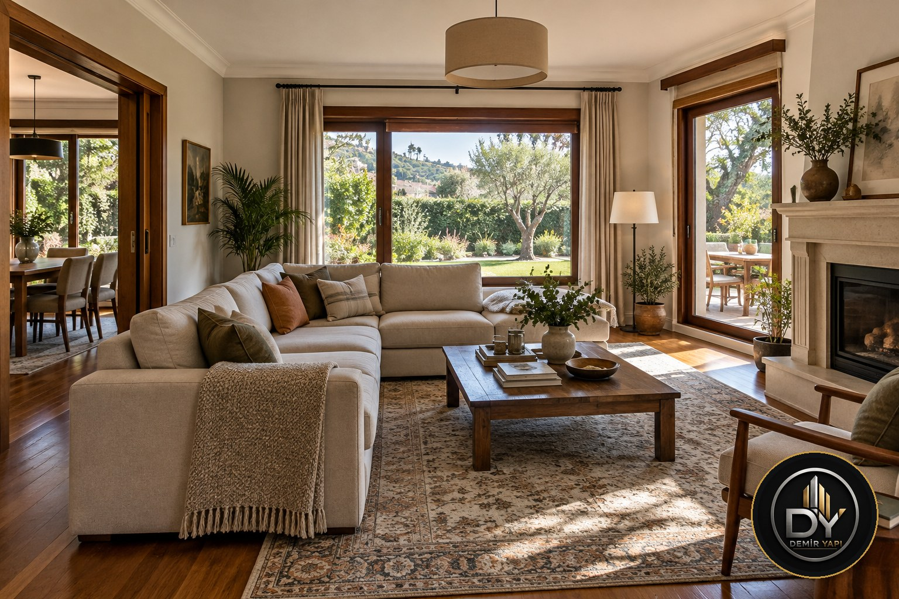
VİLLA
Villa tadilatında işler hangi sırayla ilerlemeli?
İç ve dış mekân işleri, altyapıdan bitişlere uzanan ortak bir takvimde koordine edilmelidir.